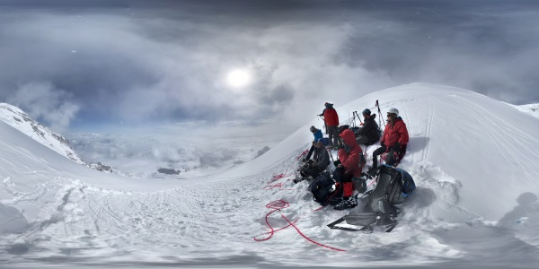
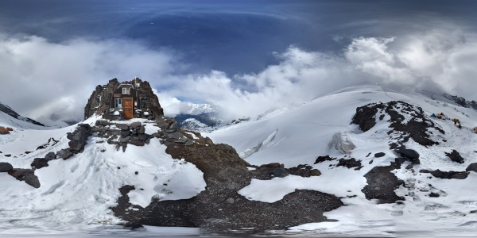

Mount Rainier Summit via Emmons Glacier
On June 13-17, 2016, I climbed to the Mount Rainier summit with guides from IMG.
Camp One at 7,000 Feet
Resting on the Mountain Side

Camp Schurman at 9,460 Feet

Mount Rainier Summit at 14,410 Feet